長九郎山
| 日付 | 2007年12月15日（土） |
|---|---|
| 山域 | 伊豆 |
| メンバー | 単独 |
| 山行形態 | 日帰り |
| アクセス | 電車、バス |
| ルート (Map) | 大沢温泉口→八瀬峠→長九郎山→長九郎山登山口→大沢温泉口 |
青春18切符の期間が始まったので、
少し遠出して伊豆の南部にある山に行ってみる。
8:52 大沢温泉口バス停到着。標高35m。
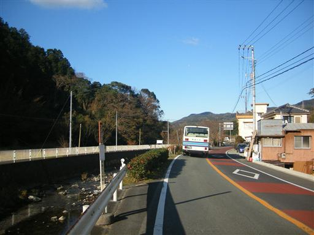
人は少ないが、登山道は整備されている。
登山道のほとんどは斜面をトラバース気味につけられているので、現在地確認が難しい。
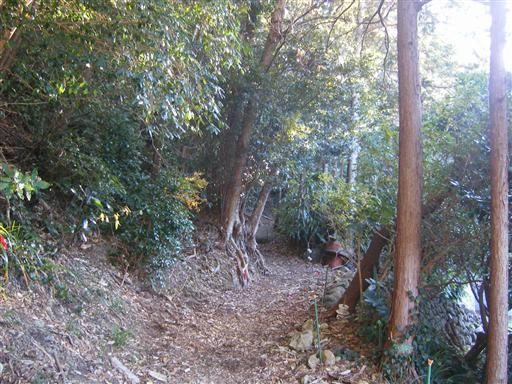
今日は晴れ予報だが、山の上には雲がたくさん出ている。
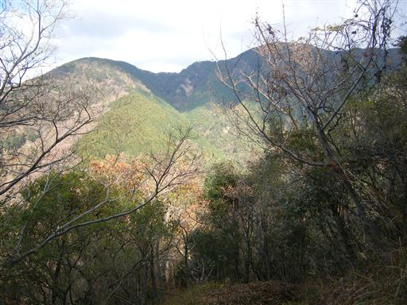
高台に到着。駿河湾がきれいに見える。
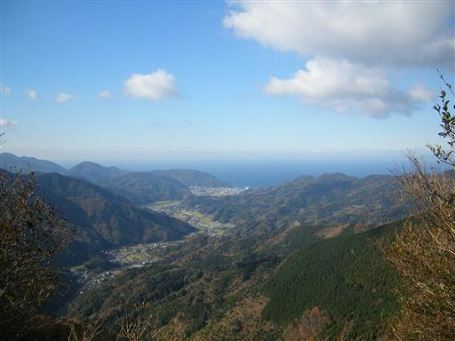
明るい斜面をゆったりと登っていく。
この山は標高は高くないが、山頂までの距離が結構長い。
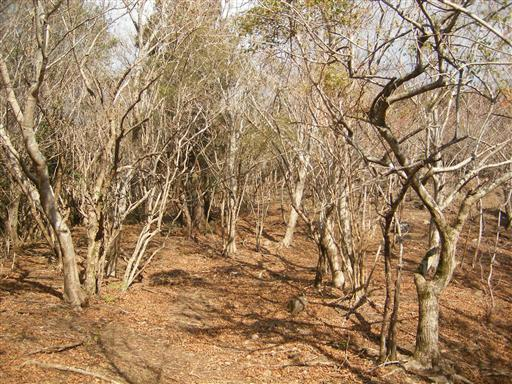
蛇行して伸びるヒメシャラの木。
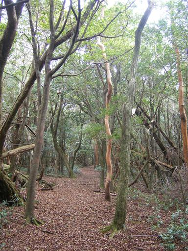
伊豆の山は他の山域ではあまり見かけない木がたくさん自生している。
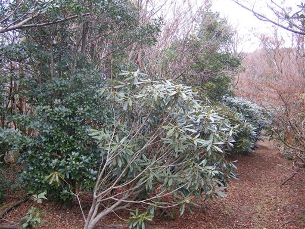
11:54 長九郎山山頂到着。標高996m。
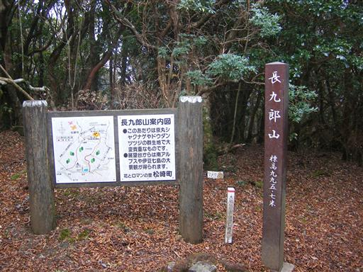
狭い山頂には大きな展望台が建てられている。
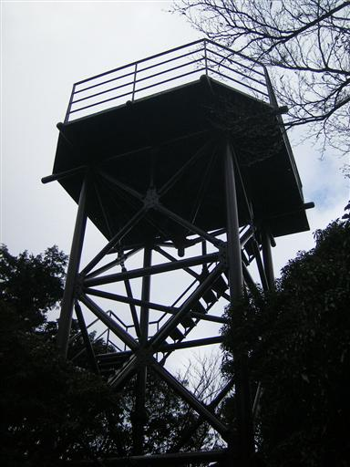
展望台からの景色。山頂からも駿河湾とその向こうに陸地がかすかに見える。
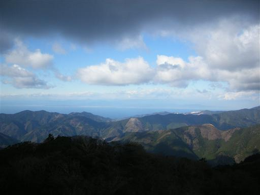
北東方面には天城山が望める。
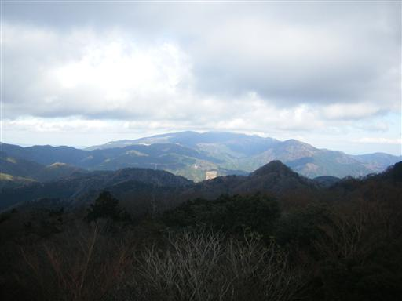
昼食をとって下山開始。山道と林道が交互に現れる。
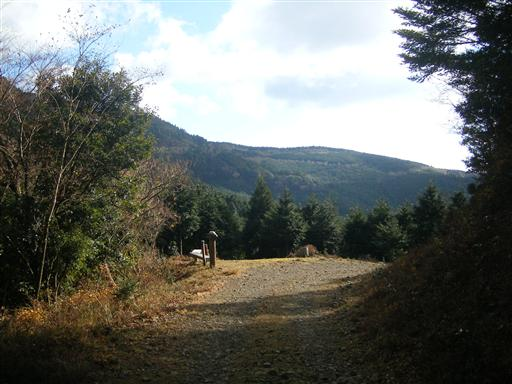
ぐるぐる巻いている木。何をどうやったらこんな形になるのだろう…
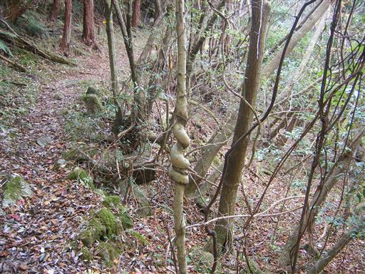
沢沿いの道にはあちこちにわさび田が広がっている。
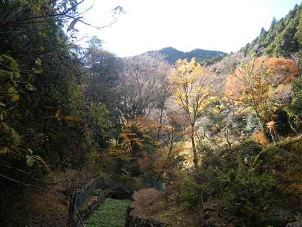
ススキが広がる林道に到着。
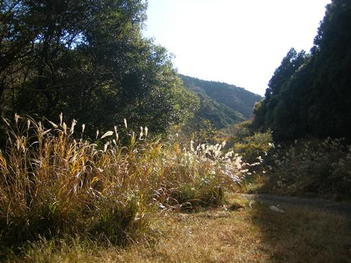
少しだけ椿の花が咲いている。
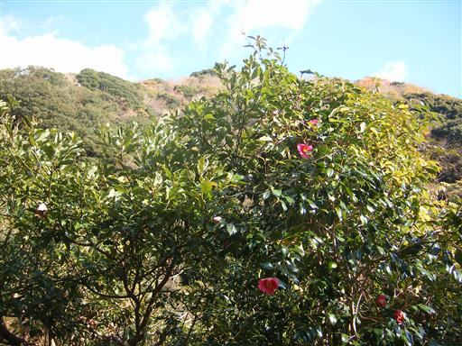
下山。静かな集落にみかん畑が広がる。
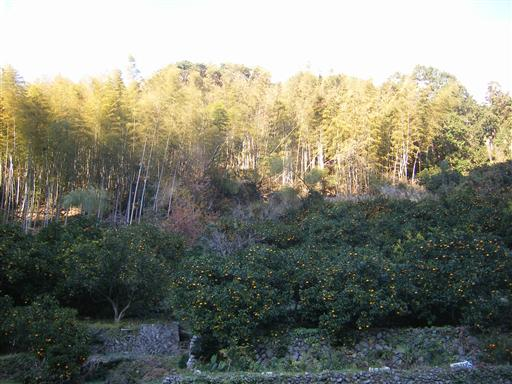
15:13 大沢温泉口バス停到着。
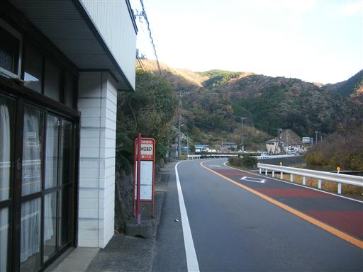